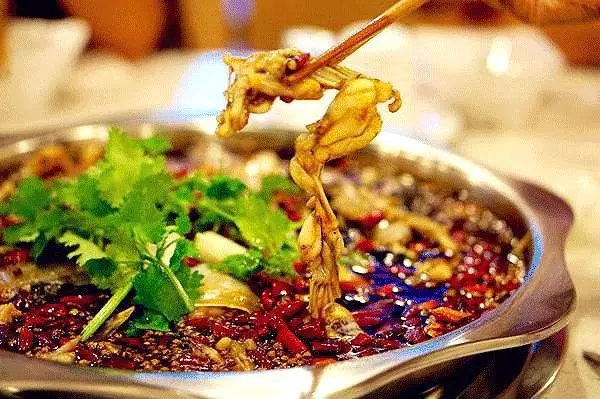
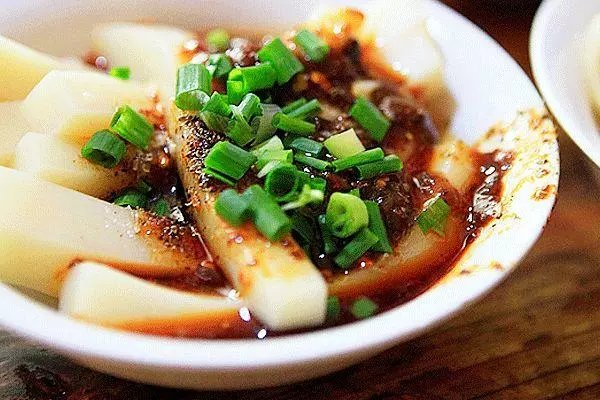
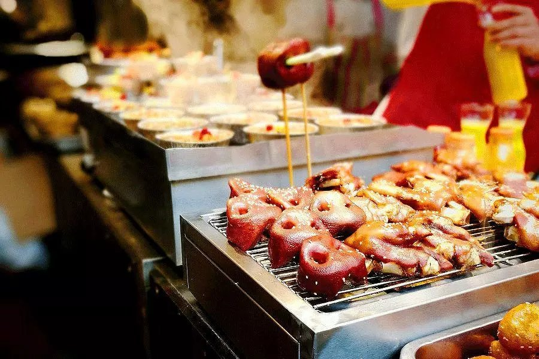
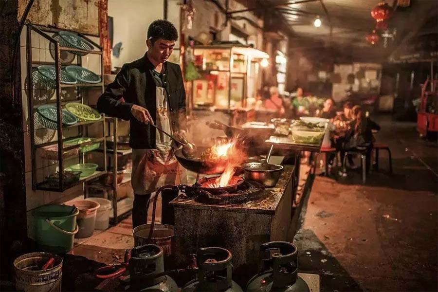
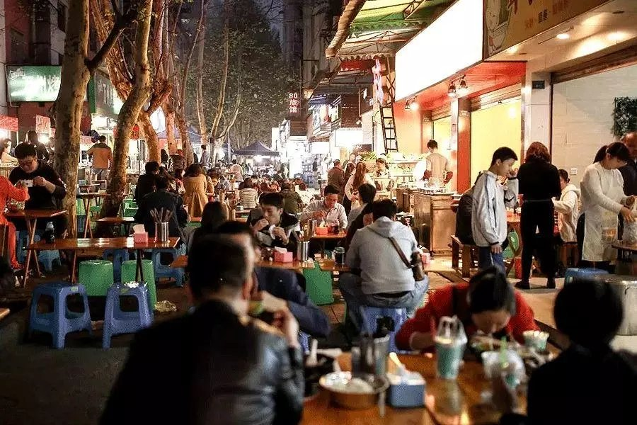
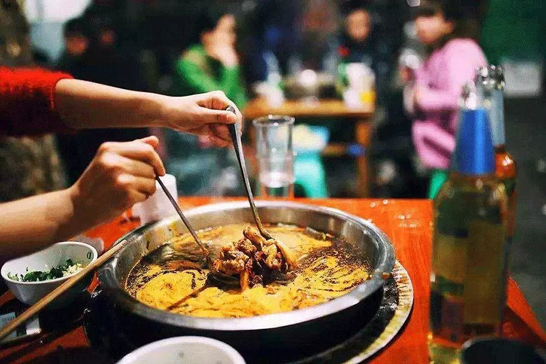

成都的吃是闻名全国的。
吃过四川火锅的人，有时候只要想象一下食材伴着“咕嘟咕嘟”的气泡声在辣椒油里翻腾的样子，都能兴奋得头脑发热，恨不得马上卷起袖子捞上一碗站着就吃。
但火锅还不是成都的专属。为了保住“美食之都”的荣誉，成都人还有不少宝贝：冒菜、凉糕、糍粑、冰粉、甜水面、钵钵鸡、老妈蹄花、狼牙土豆......一周之内，可以叫你每顿都不重样。


老派成都人对这些美食的位置了如指掌。他们在巷子里七拐八拐，就能找到一份十年不变的味道。掌勺的老板问都不消问，就知道来客的习惯，多放葱花或是不要香菜，摆上干碟还是油碟。
四川话把这样的小店叫做“苍蝇馆子”，非用餐时间，让人觉得馆子里冷清得只能拍苍蝇，谁知一到饭点，食客们宁愿站着也要来吃，火爆程度超出想象。
  